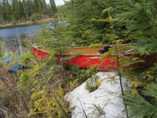

Algonquin Park Brook Trout, April 2011
Trout Opener
 The trout opener came and went in Algonquin, with a slow start due to
full ice cover on opening weekend. We headed in a full week after the
opener and even then, some ice covered lakes remained. We decided to
car camp to ensure mobility and keep the lake options open. The drive
up was fast, with GPS assisted distractions Hey, there's a brook
lake 2km off the road here, supposed to be good, lets go" . Of
course "good" turned out to equal "muddy" or "undriveable" and so in the end, no new lakes were found. The campground was also muddy, but we lucked out getting
there in time to see clearly and get our tent setup in a dry area, with plenty of time for a fire, food and some beverages.
The trout opener came and went in Algonquin, with a slow start due to
full ice cover on opening weekend. We headed in a full week after the
opener and even then, some ice covered lakes remained. We decided to
car camp to ensure mobility and keep the lake options open. The drive
up was fast, with GPS assisted distractions Hey, there's a brook
lake 2km off the road here, supposed to be good, lets go" . Of
course "good" turned out to equal "muddy" or "undriveable" and so in the end, no new lakes were found. The campground was also muddy, but we lucked out getting
there in time to see clearly and get our tent setup in a dry area, with plenty of time for a fire, food and some beverages.
We also decided to hump it into a back lake for the dusk bite
which turned out to be not so good. The trail was covered in downed
trees from a big storm the week before and the access to the lake for
shore fishing was limited. The fishing itself produced nothing so we went back
to the site, stoked up the fire and consumed beers.
The night was cold enough that I wore a hat to bed. I will be
needing a new warmer sleeping bag for the cold trip in the fall.
After a restless sleep, including a middle the night wandering to take
care of the beer I woke up early to find the whole world
covered in frost. Pretty cold night, and frigid temps but sunny so
everything looked good and the sun felt great as it melted the frost
and warmed us up. We decided on a monster breakfast to start the
day. Oatmeal and coffee plus bacon and eggs, made the usual way in a
foil bowl for the traditional egg-muffin breakfast.
Day 1


The cold day didn't prevent the shorts from coming out. This
was to prepare for later, when the hot sunny weather cooked us, so I dressed
in layers. There are no bugs this time of year and wandering the woods
is hot work so usually after a portage, I'm warm enough for shorts.
The first lake we wanted to head into was iced over hard. So we
decided to fish the creek that led to the lake but that creek was
running too high. We felt adventurous so, instead of fishing the
creek you could easily get to, we chose the one you had to bushwhack
into, in an attempt to find the mythical rapids or falls (we don't
know, no such falls were found). These non-existant falls were
rumoured to hold trout and lots of trout. We did see some bush and
swamp and more trees and some nice moose resting spots but no fish.


We also fished a small lake with some edge ice that almost
prevented us from getting on the lake. It was easy to get to and there
should have been fish but perhaps the water was too cold so no fish
there either. Finally we walked up to a hill side lake with many small
brookies, caught a couple of embarassingly small fish and called it a
successful day, fish caught, no injuries and food and beer to
celebrate with.
Day 2
Day 2 breakfast was a repeat of day one, and we were preparing for
an adventure so we ate extra. We decided to portage in 1KM to a lake
everyone can get to so likely poor fishing, and then in a
demonstration of genius, we'd try to get to a second lake that no-one
normally gets to. Secret plan to get to secret lake with monster
fish. The lake had no marked portage. We tried to bump down a set of
beaver dams but the rock gardens make it unworkable. We lucked out
with crazy Pete, and two gps's followng a sad creek and then with a
little backtracking, we found the actual lake. A crazy portage with no
actual trail, and bush everywhere. The good news is we also got a
brookie on the third cast after we arrived and then spend the next few
hours fishing and not catching anymore. The winds were high so it make for tough canoe positioning.

The woods still had lots of snow in spots, some lakes had ice but
it turned out to be a hot sweaty day for lugging gear across the
woods. At the end of the day, we headed home, stopped at one more
river to check out a back road that lead to a set of falls. A monster
pizza in Barrys Bay and then a fast drive home and the weekend was
done.
The boys
 The trout opener came and went in Algonquin, with a slow start due to
full ice cover on opening weekend. We headed in a full week after the
opener and even then, some ice covered lakes remained. We decided to
car camp to ensure mobility and keep the lake options open. The drive
up was fast, with GPS assisted distractions Hey, there's a brook
lake 2km off the road here, supposed to be good, lets go" . Of
course "good" turned out to equal "muddy" or "undriveable" and so in the end, no new lakes were found. The campground was also muddy, but we lucked out getting
there in time to see clearly and get our tent setup in a dry area, with plenty of time for a fire, food and some beverages.
The trout opener came and went in Algonquin, with a slow start due to
full ice cover on opening weekend. We headed in a full week after the
opener and even then, some ice covered lakes remained. We decided to
car camp to ensure mobility and keep the lake options open. The drive
up was fast, with GPS assisted distractions Hey, there's a brook
lake 2km off the road here, supposed to be good, lets go" . Of
course "good" turned out to equal "muddy" or "undriveable" and so in the end, no new lakes were found. The campground was also muddy, but we lucked out getting
there in time to see clearly and get our tent setup in a dry area, with plenty of time for a fire, food and some beverages.


{kind=link}